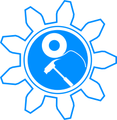

About Us:
Team Impulse was formed in Spring 2014 to enter the 2014/15 UK CanSat competition. Although this had not then been announced, we drafted a document describing aims and analysing the problem from an engineering perspective. We submitted the proposal to our school's engineering department and it was accepted; it will go forwards for consideration by the UK branch of the European Space Agency, which organises the challenge.But what is a CanSat?
A CanSat is a student-built "satellite" in the form of a standard soft drinks can - 115mm tall and 66mm in diameter. The CanSat must complete a specified mission, in this case the measurement of a set of parameters and autonomous ground navigation to a transmitted location. Whilst collecting these data, it is dropped from between 300 and 1000m; it will be launched by rocket, balloon, crane, light aircraft...the sky's the limit! For more information on the CanSat mission proposed, please see "Mission" above!

Here's the latest:
These should just be links to the headings in the following format (dead links):13.6.14: This Website was launched!
29.5.14: Team IMPULSE proposal submitted to the Engineering Dept.!
Meet the team:

William Eustace
Team Leader; programming, electronics and hardware roles as well. Twitter: @WilliamEustace
Yuki de Pourbaix
Lead Hardware Developer. Some other stuff too.Alex Forey
Lead programmer; some electronics. Twitter etc?Neel le Penru
Hardware development; some electronics. Social?Euan Baines
Lead Electronics developer: also programming.Hugo Cheema-Grubb
Outreach programme director: possibly some other things? Social?